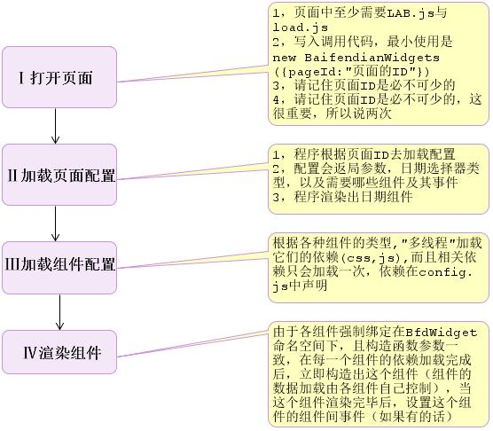
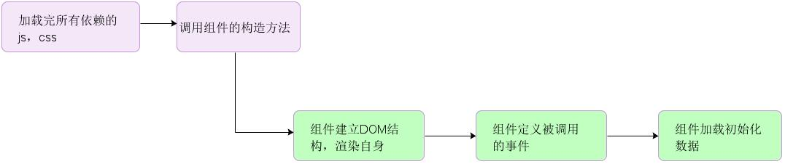

load会在加载全局配置后分析出有哪些组件,并加载组件的依赖,加载机制如下
//假设从配置中读出有两个组件，它们的依赖如下
var widget1Script = ['a1.js', 'a2.js']
var widget2Script = ['b1.js', 'a1.js']
//重复的js容器
var repeatScript = {}
//经计算,容器的值为
repeatScript = {
'a1.js': '未加载'
}
//------以上过程计算出了依赖重复-----
//定义组件依赖加载函数
function loadScript(widgetScript, $l){//widgetScript-依赖链为空, $l-加载链
//加载widget的依赖
$.each(widgetScript, function(i, item){
if (repeatScript[item] !== undefined) {//判断需要加载的文件是否在依赖重复中
if (repeatScript[item] === '未加载') {
repeatScript[item] = '加载中'//改状态
$l.script(item).wait(function(){//加载文件
//加载完回调
repeatScript[item] = '已加载'
})
}
else
if (repeatScript[item] === '加载中') {
var interval = setInterval(function(){//每5毫秒查询一下状态
if (repeatScript[item] === '已加载') {
clearInterval(interval)//清理定时器
loadScript(widgetScript.slice(i + 1), $l)//递归,把加载链切分当参数
}
}, 5)
return false
}
else
if (repeatScript[item] === '已加载') {
//执行回调,这段伪代码里没有定义
}
}
else {//不在依赖重复中
//加载文件
$l.script(item)
}
})
}

以下演示如何定义组件间事件
BfdWidget['组件名'] = function(setting, global){//定义一个组件
Widget.call(this)//必须继承Widget
var self=this
self.addEvent('事件名', function() {//定义一个可以事件,可以通知其他组件
//事件自带可执行事件,一般什么都不写,用来写调试信息
})
self.dom.click(function(){
self.fireEvent('事件名',自定义参数列表(用以传给其他组件)...)
})
}